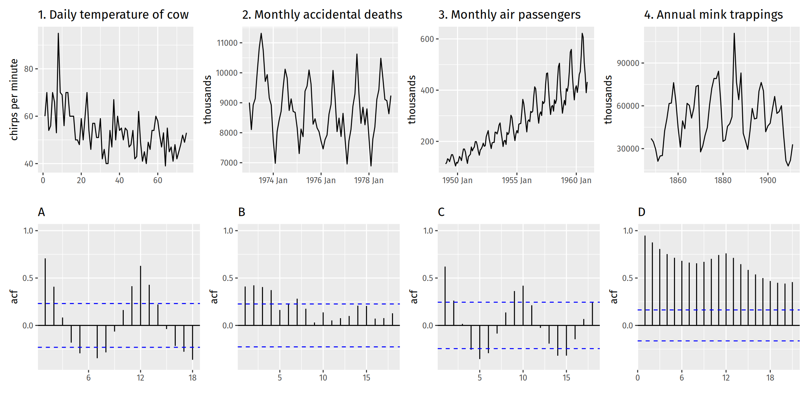

Activities: Week 2
More R functions
gg_season()withperiodargumentpivot_longer()facet_grid()GGally::ggpairs()gg_lag()ACF()
Exercise 1: cyclic data
A famous data set containing cycles is the Canadian lynx data, contained in pelts.
How far apart are the peaks and troughs on average?
Produce a lag plot for the Lynx series.
Which lags have the strongest correlation? Why?
Produce an ACF plot for the Lynx series.
- Why does the ACF peak around lag 10?
- Why can’t this data be seasonal?
Exercise 2: seasonal and cyclic data
Sometime trend, seasonality and cyclicity can occur together, such as in the Bricks production data.
- Can you see the seasonality in the time plot? How about the ACF plot?
- Can you see the cyclicity in the time plot? How about the ACF plot?
Exercise 3: ACF plots
Which time plot corresponds to which ACF plot?

Plot 1.
Plot 2.
Plot 3.
Plot 4.
Exercise 4: white noise
White noise data consists of purely random draws from the same distribution with mean zero and constant variance. y_t = \varepsilon_t, \qquad \text{where $\varepsilon_t \mathop{\sim}\limits^{\mathrm{iid}} N(0, \sigma^2)$}
White noise data can be simulated using the rnorm() function. By setting the seed at the start of the code, we ensure the same random numbers are generated each time it is run. Change the seed to get different random numbers.
Can you find a seed value that gives data which appear NOT to be white noise?
Exercise 5: random walks
Random walks are a type of time series where the value at time t is equal to the previous value plus a random amount from a white noise process. y_t = y_{t-1} + \varepsilon_t, \qquad \text{where $\varepsilon_t \mathop{\sim}\limits^{\mathrm{iid}} N(0, \sigma^2)$} Equivalently, we can take the cumulative sum of a white noise process. y_t = y_{0} + \sum_{t=1}^{T} \varepsilon_t, \qquad \text{where $\varepsilon_t \mathop{\sim}\limits^{\mathrm{iid}} N(0, \sigma^2)$}
Experiment by re-running the code with different seed values. Try to find a random walk which appears to have a strong positive trend, and another with a strong negative trend. Remember, it can’t really have a trend because it is simply being generated from summing random numbers which have zero mean.